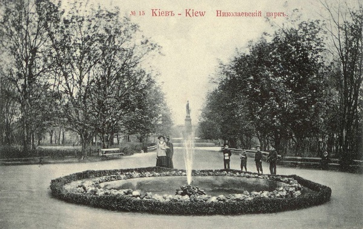
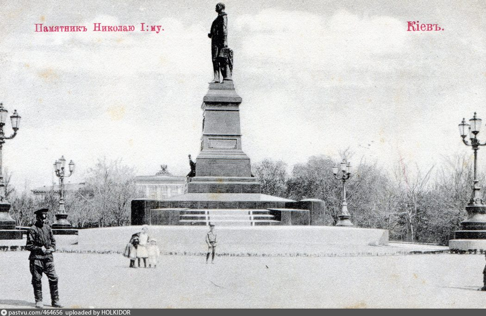
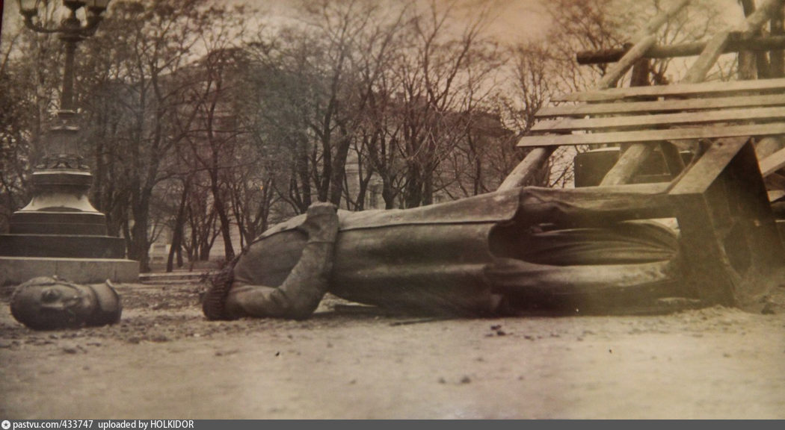
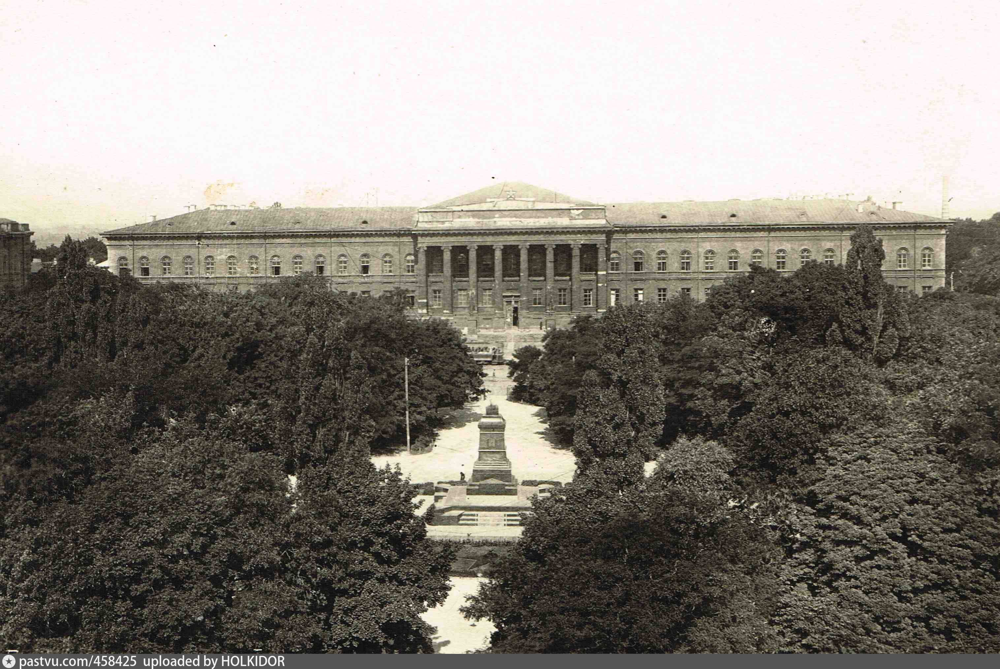
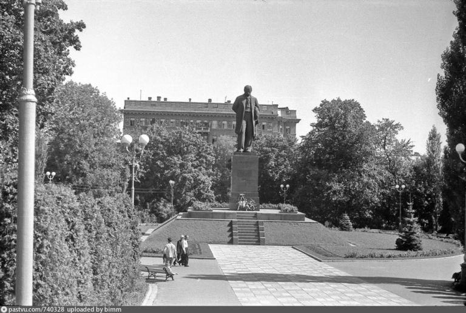
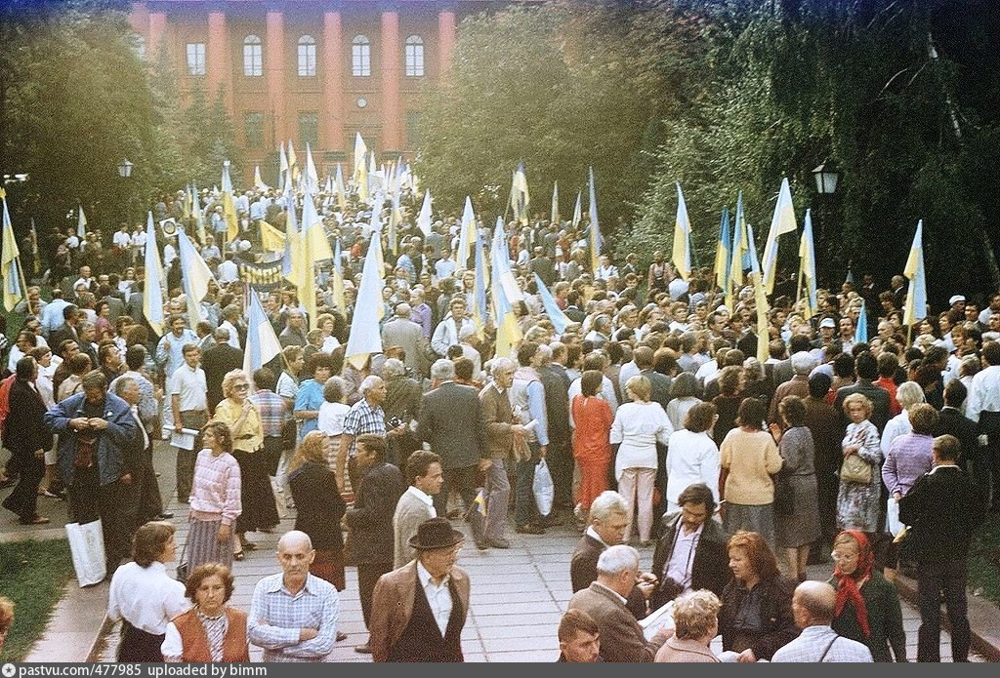
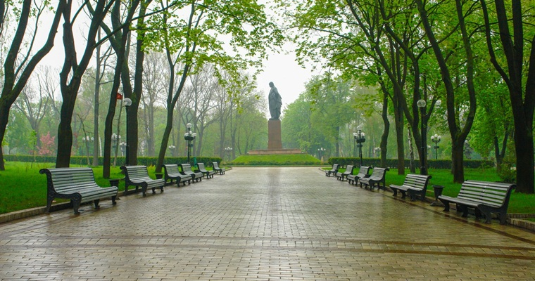

Парк імені Тараса Шевченка
Миколаївський парк

Пам`ятник Миколі І
1896 рік

1920

“Червоний” парк, 1925

В 1939 році з’явився відомий символ цього парку – пам’ятник Тарасу Шевченку.

1942 рік

1990 рік

Сучасний парк Шевченко
Назад